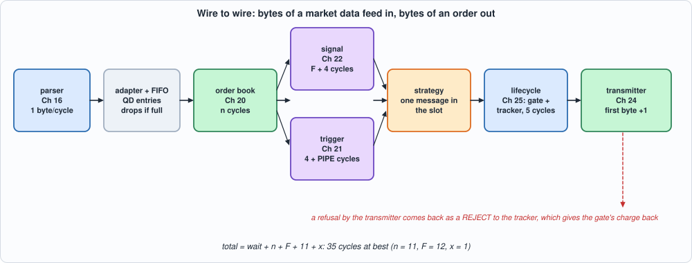
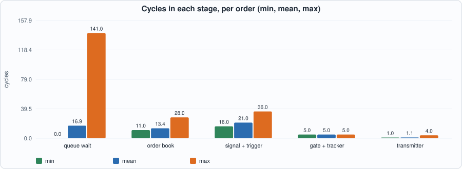
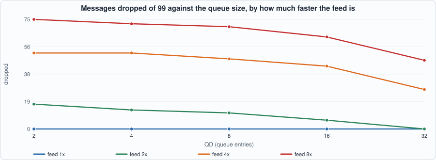

26. Wire to Wire: Chaining the Units into One Design and Writing Down Where Every Cycle Goes¶
About the kestrels in this picture
- Mauritius kestrel (Falco punctatus) lives only on the island of Mauritius. By the mid-1970s only a handful of wild birds were known (the figure usually quoted is four); captive breeding and release programmes brought the population back to hundreds.
- Seychelles kestrel (Falco araeus) is found on the granitic islands of the Seychelles. It is a small kestrel that hunts lizards and insects in forest and around villages.
The scene is imaginary and the birds are stylised drawings.
What you will see: twenty-five chapters built units; this chapter connects them. Bytes of a MoldUDP64 + ITCH feed go in at one end; bytes of an order entry stream come out at the other, and in between a message passes the parser (Chapter 16), an adapter and a queue, the order book (Chapter 20), the signal unit (Chapter 22) and the trigger engine (Chapter 21) in parallel, a strategy (one comparison), the lifecycle of Chapter 25 (risk gate and tracker) and the transmitter (Chapter 24). The chapter's product is not a faster unit but a cycle budget: for every order, the number of cycles in each stage from the last byte of the message that caused it to the first byte of the order, with a closed form that is checked against every order of every test. The whole design is tested against a composed specification in every cycle, every output, in two simulators; and what the glue does that no unit's own test could show (queue drops, a transmitter that refuses what the gate charged, two users of one port) is found by mutation testing.
What you need to know first: Chapters 16 (the parser's timing), 20 to 25 (each unit's specification and its time), and the habit of Chapter 20: time is part of the specification.
What this chapter builds: rtl/w2w.sv (w2w, the glue, and w2w_syn), model/w2w_gold.py (the composed specification, with the stepped transmitter and five scenarios worked by hand), tb/w2w_tb.sv, tools/ch26_run.py, tools/ch26_example_a.py, tools/ch26_example_b.py, tools/mut_ch26.py, tools/make_figs_ch26.py. The units themselves (mold_itch.sv, book2.sv, sig.sv, trig.sv, risk.sv, track.sv, life.sv, sess.sv) are unchanged.
A model of a design, not a product
This is a wire-to-wire pipeline for study. The market data and the order entry protocols are the book's own simplifications (Chapters 16 and 24); the "strategy" is one comparison that is not a trading strategy; the latencies are cycle counts of a placed model, and the design does not fit the HX8K. Nothing here has been connected to a market or tested against an exchange's certification, and nothing here is investment advice.
Scope: what this chapter leaves out, on purpose
One message at a time between the book and the strategy (the slot, below): the design is correct and simple and it is not a one-message-per-cycle pipeline; Example B shows what that costs. A one-byte-per-cycle parser (Chapter 17's wide parser is the exercise). No Ethernet, IP, UDP or TCP (Chapters 12 to 15's stack is not in this path; the bytes enter as the parser's stream). The register interface and DMA to the host that the contents list for this part are not in this chapter. Queue depth QD is at least 2, and a control request (login, logout) must not be offered in the same cycle as an order answer.
The specification¶
model/w2w_gold.py states the path in its docstring and executes it, one cycle at a time, by calling the units' own models: the parser's cycle for each message (Chapter 16's decode), the book's cycles for each event (Chapter 20), the signal's numbers (Chapter 22), the trigger's table and rules (Chapter 21), the gate and tracker (Chapter 25's Sys, stepped) and the transmitter (Chapter 24's model, made into a class that is stepped and checked against the original on 30 random sessions). In words:
- Parser. A message whose last byte is in cycle e appears in cycle E = e + 1.
- Adapter and queue. A and F become ADD, E EXEC, X CANCEL, D DELETE, U REPLACE; S, P, unknown types, messages with an error (the parser's codes 1 and 2) and any symbol of NS or more are dropped before the queue. The reference is the low 32 bits of the 64-bit reference. The event is pushed in cycle E into a FIFO of
QDentries; if the FIFO is full in that cycle the message is dropped and counted. - Book. In the first cycle a ≥ E + 1 in which the book is ready and the strategy slot is free the head event is accepted; the book takes n cycles (Chapter 20's rules) and its result is visible in cycle r = a + n.
- Signal and trigger. Both are offered the result in cycle r. The signal answers in d = r + F + 4; the trigger (offered the event as accepted, the symbol index as the key) answers in r + 4 + PIPE and its
fireis kept until d. - Strategy, in cycle d: if the trigger fired, the book applied the event (result OK), both sides are present, the book is not crossed or locked and the imbalance is at least +THR (buy at the ask) or at most −THR (sell at the bid), an order of
OQshares at that price is offered to the lifecycle in cycle d only: if the lifecycle is not ready (an order or a release is using it) the order is missed and counted. The slot is held from a to d: one message at a time between the book and here, so that nothing has to be matched up afterwards. - Lifecycle and transmitter. The gate and tracker answer 5 cycles after the offer; an answer of 0 is offered to the transmitter in that cycle (held if the transmitter is not ready: one held order is enough, since the next answer is at least 24 cycles later and the transmitter is busy for at most 31). A transmitter that refuses an order (the session is not ACTIVE) makes the design report a REJECT of that token to the tracker, which gives the gate's charge back; an exchange report that arrives in the same cycle wins the report port and the REJECT waits.

Figure 26.1: the path of a message.The closed form of the budget follows: the cycles from the last byte of the message to the first byte of the order are wait + n + F + 11 + x, with wait the cycles in the queue, n the book's cycles, F + 4 the signal, 5 the lifecycle, and x the cycles from the gate's answer to the first byte (1 if the transmitter is ready). The smallest possible is 35 cycles (wait 0, n 11 for an ADD on an empty side, F 12, x 1).
The hardware¶
- The glue is small: 459 LUTs of the 9,975 the units add up to (Example A). It is an adapter (a
caseon the message type), a register FIFO, the strategy (one comparison and two subtractions), a counter, and the send and reject logic. - The strategy slot is the one design decision:
slotis set when the book accepts an event and cleared when the signal answers. While it is set the queue is not read, so the trigger'sfireand the book's result and symbol (kept in registers) belong to the event the signal's answer is about. A pipelined strategy would need those carried along with the event, and a FIFO of them; the price of the slot is that the design takes one message pern + F + 5cycles (Example B). - Three places where one thing is used by two: the gate's event port (Chapter 25's priority: a tracker release, a give-back, a new order), the tracker's report port (the exchange's report first, the design's own REJECT second) and the transmitter's request port (a control request first, an order second). Each is a place where the units were correct alone.
- Fields that the adapter forces: for E, X and D the side and the price are not in the message, so the adapter sets them to 0 instead of letting the parser's registers (which keep the previous message's values) leak through.
// Chapter 26: wire to wire. The units of Chapters 16 to 25 chained into one design: bytes of a MoldUDP64 + ITCH feed in; bytes of an order entry stream out. The path of a message: the PARSER (Chapter 16; one byte per cycle) -> the ADAPTER (a message becomes a book event; a small FIFO absorbs bursts and counts what it must drop) -> the ORDER BOOK (Chapter 20; variable time) -> in parallel the SIGNAL unit (Chapter 22) and the TRIGGER engine (Chapter 21) -> the STRATEGY (one comparison: a rule fired and the book is lopsided: buy at the ask or sell at the bid, a fixed quantity) -> the LIFECYCLE (Chapter 25: risk gate + tracker) -> the TRANSMITTER (Chapter 24). One message is in the book-signal-strategy stage at a time (`slot`), so nothing has to be matched up after the fact; the FIFO in front of it is what the parser's one-byte-per-cycle pace and the book's variable time are reconciled by. A transmitter that refuses an order the gate has charged is reported to the tracker as a REJECT, which gives the charge back. The specification is in model/wire_gold.py.
module w2w #(parameter int NS = 4, parameter int NA = 4, parameter int NT = 4, parameter int QD = 8, parameter int F = 12, parameter int TPIPE = 1, parameter int THR = 512, parameter int OQ = 10, parameter int W = 8, parameter int HB = 20, parameter int TL = 60) (
input logic clk, input logic rst,
// the wire
input logic s_valid, input logic s_sop, input logic s_eop, input logic [7:0] s_data,
// the exchange's reports (Chapter 25) and the control plane
input logic r_valid, input logic [1:0] r_kind, input logic [31:0] r_tok, input logic [15:0] r_qty,
input logic tc_valid, input logic [3:0] tc_rule, input logic tc_en, input logic tc_neg, input logic [4:0] tc_tmask, input logic tc_symany, input logic tc_sideany, input logic tc_side, input logic [2:0] tc_pxop, input logic [2:0] tc_shop, input logic [31:0] tc_symmask, input logic [31:0] tc_pxval, input logic [31:0] tc_shval,
input logic tl_valid, input logic [11:0] tl_addr, input logic [31:0] tl_key, input logic [4:0] tl_idx, input logic tl_val,
input logic cfg_a_valid, input logic [3:0] cfg_a_idx, input logic [15:0] cfg_maxlong, input logic [15:0] cfg_maxshort, input logic [15:0] cfg_maxqty, input logic [39:0] cfg_maxonot, input logic [41:0] cfg_maxnot, input logic [7:0] cfg_cap,
input logic cfg_b_valid, input logic [3:0] cfg_b_idx, input logic [15:0] cfg_lo, input logic [15:0] cfg_hi, input logic ctl_arm, input logic ctl_disarm, input logic ext_kill,
input logic sc_valid, input logic [2:0] sc_what, input logic [3:0] sc_sym, input logic [31:0] sc_data, input logic rx_valid, input logic [7:0] rx_type, input logic [31:0] rx_seq,
input logic cq_valid, input logic [2:0] cq_kind,
// the order entry stream
output logic o_valid, output logic [8*W-1:0] o_data, output logic o_last, output logic [3:0] o_nb,
// what a supervisor needs to see (Chapter 27)
output logic tap_slot, output logic tap_fault, output logic [2:0] tap_sess, output logic tap_txready, output logic tap_quiet);
localparam int SW = (NS > 1) ? $clog2(NS) : 1;
// ---- the parser
logic m_valid; logic [7:0] m_type; logic [1:0] m_err; logic [15:0] m_idx; logic [63:0] h_seq; logic p_valid, p_trunc, p_cntbad; logic [79:0] h_session; logic [15:0] h_count;
logic [15:0] f_locate, f_tracking; logic [47:0] f_ts; logic [7:0] f_event; logic [63:0] f_ref; logic [7:0] f_side; logic [31:0] f_shares; logic [63:0] f_stock; logic [31:0] f_price, f_mpid; logic [63:0] f_match, f_newref;
mold_itch parser (.clk(clk), .rst(rst), .valid(s_valid), .sop(s_sop), .eop(s_eop), .data(s_data), .m_valid(m_valid), .m_type(m_type), .m_err(m_err), .m_idx(m_idx), .h_seq(h_seq), .p_valid(p_valid), .p_trunc(p_trunc), .p_cntbad(p_cntbad), .h_session(h_session), .h_count(h_count),
.f_locate(f_locate), .f_tracking(f_tracking), .f_ts(f_ts), .f_event(f_event), .f_ref(f_ref), .f_side(f_side), .f_shares(f_shares), .f_stock(f_stock), .f_price(f_price), .f_mpid(f_mpid), .f_match(f_match), .f_newref(f_newref));
// ---- the adapter: a message becomes a book event (A, F: add; E: execute; X: cancel; D: delete; U: replace); anything else, any message with an error and any symbol index of NS or more is filtered out
logic ad_ok; logic [2:0] ad_t; logic ad_side; logic [31:0] ad_px, ad_sh;
always_comb begin
ad_t = 3'd0; ad_ok = 1'b0; ad_side = 1'b0; ad_px = 32'd0; ad_sh = 32'd0;
if (m_valid && m_err == 2'd0 && f_locate < 16'(NS)) case (m_type)
8'h41, 8'h46: begin ad_ok = 1'b1; ad_t = 3'd0; ad_side = (f_side == 8'h53); ad_px = f_price; ad_sh = f_shares; end
8'h45: begin ad_ok = 1'b1; ad_t = 3'd1; ad_sh = f_shares; end
8'h58: begin ad_ok = 1'b1; ad_t = 3'd2; ad_sh = f_shares; end
8'h44: begin ad_ok = 1'b1; ad_t = 3'd3; end
8'h55: begin ad_ok = 1'b1; ad_t = 3'd4; ad_px = f_price; ad_sh = f_shares; end
default: ;
endcase
end
// ---- the FIFO (registers): {type, ref, ref2, symbol, side, price, shares}
localparam int EW = 3 + 32 + 32 + SW + 1 + 32 + 32;
logic [EW-1:0] fq [0:QD-1]; logic [$clog2(QD+1)-1:0] fcnt; logic [$clog2(QD)-1:0] fhd, ftl; logic [15:0] drops;
wire fq_full = (fcnt == ($clog2(QD+1))'(QD));
wire fq_push = ad_ok && !fq_full;
logic slot; logic bk_ready; wire [EW-1:0] fh = fq[fhd];
wire bk_in_valid = (fcnt != '0) && !slot; wire bk_acc = bk_in_valid && bk_ready;
// ---- the order book
logic bk_o_valid; logic [2:0] bk_o_res; logic [SW-1:0] bk_o_sym; logic [31:0] bk_bpx, bk_bsh, bk_apx, bk_ash; logic [7:0] bk_bn, bk_an; logic [15:0] bk_nord;
book2 #(.NS(NS), .D(8), .NB(8), .K(4)) book (.clk(clk), .rst(rst), .in_valid(bk_in_valid), .in_type(fh[129+SW +: 3]), .in_ref(fh[97+SW +: 32]), .in_ref2(fh[65+SW +: 32]), .in_sym(fh[65 +: SW]), .in_side(fh[64]), .in_px(fh[63:32]), .in_sh(fh[31:0]), .in_ready(bk_ready),
.o_valid(bk_o_valid), .o_res(bk_o_res), .o_sym(bk_o_sym), .o_bpx(bk_bpx), .o_bsh(bk_bsh), .o_apx(bk_apx), .o_ash(bk_ash), .o_bn(bk_bn), .o_an(bk_an), .o_nord(bk_nord));
// the event as accepted, held for the trigger (the book's own result carries only the symbol)
logic [2:0] h_t; logic [SW-1:0] h_sym; logic h_side; logic [31:0] h_px, h_sh;
always_ff @(posedge clk) if (rst) begin h_t <= '0; h_sym <= '0; h_side <= 1'b0; h_px <= '0; h_sh <= '0; end else if (bk_acc) begin h_t <= fh[129+SW +: 3]; h_sym <= fh[65 +: SW]; h_side <= fh[64]; h_px <= fh[63:32]; h_sh <= fh[31:0]; end
// ---- the signal unit and the trigger engine, both fed with the book's result
logic sg_ready, sg_v, sg_ok, sg_cross, sg_lock; logic [24:0] sg_mid2; logic signed [24:0] sg_spread; logic [F:0] sg_w; logic signed [F+1:0] sg_imb; logic [24+F-1:0] sg_micro;
sig #(.PW(24), .QW(20), .F(F), .DIV(1)) sgu (.clk(clk), .rst(rst), .in_valid(bk_o_valid), .in_bpx(bk_bpx[23:0]), .in_bsh(bk_bsh[19:0]), .in_apx(bk_apx[23:0]), .in_ash(bk_ash[19:0]), .in_ready(sg_ready),
.o_valid(sg_v), .o_ok(sg_ok), .o_mid2(sg_mid2), .o_spread(sg_spread), .o_cross(sg_cross), .o_lock(sg_lock), .o_w(sg_w), .o_imb(sg_imb), .o_micro(sg_micro));
logic tg_ready, tg_v, tg_found, tg_fire; logic [4:0] tg_idx; logic [3:0] tg_mask, tg_first;
trig #(.NB(8), .K(2), .R(4), .PIPE(TPIPE)) tgu (.clk(clk), .rst(rst), .in_valid(bk_o_valid), .in_type(h_t), .in_key({{(32-SW){1'b0}}, h_sym}), .in_side(h_side), .in_px(h_px), .in_sh(h_sh),
.cfg_valid(tc_valid), .cfg_rule(tc_rule), .cfg_en(tc_en), .cfg_neg(tc_neg), .cfg_tmask(tc_tmask), .cfg_symany(tc_symany), .cfg_sideany(tc_sideany), .cfg_side(tc_side), .cfg_pxop(tc_pxop), .cfg_shop(tc_shop), .cfg_symmask(tc_symmask), .cfg_pxval(tc_pxval), .cfg_shval(tc_shval),
.ld_valid(tl_valid), .ld_addr(tl_addr), .ld_key(tl_key), .ld_idx(tl_idx), .ld_val(tl_val), .o_ready(tg_ready), .o_valid(tg_v), .o_found(tg_found), .o_idx(tg_idx), .o_mask(tg_mask), .o_fire(tg_fire), .o_first(tg_first));
logic t_fire; logic r_okres; logic [SW-1:0] r_sym;
always_ff @(posedge clk) if (rst) begin t_fire <= 1'b0; r_okres <= 1'b0; r_sym <= '0; end else begin
if (tg_v) t_fire <= tg_fire;
if (bk_o_valid) begin r_okres <= (bk_o_res == 3'd0); r_sym <= bk_o_sym; end
end
// ---- the strategy: in the cycle the signal unit answers (one message in the stage), buy at the ask or sell at the bid if the rule fired, the event was applied and the book is lopsided enough
wire dec_buy = sg_v && sg_ok && !sg_cross && !sg_lock && t_fire && r_okres && (sg_imb >= $signed((F+2)'(THR)));
wire dec_sell = sg_v && sg_ok && !sg_cross && !sg_lock && t_fire && r_okres && (sg_imb <= -$signed((F+2)'(THR)));
wire ord_valid = dec_buy || dec_sell;
wire [24:0] ask_px = 25'((sg_mid2 + 25'(sg_spread)) >> 1), bid_px = 25'((sg_mid2 - 25'(sg_spread)) >> 1);
// ---- the lifecycle
logic ord_ready; logic [31:0] tokc; logic o_acc_v; logic [31:0] o_tok; logic [3:0] o_sym; logic o_side; logic [15:0] o_px;
wire ord_acc = ord_valid && ord_ready;
logic rej_pend; wire rep_v = r_valid || rej_pend;
logic d_valid; logic [4:0] d_res; logic [31:0] d_tok; logic c_valid; logic [2:0] c_res; logic rk_valid; logic [1:0] rk_kind; logic [3:0] rk_res; logic signed [17:0] rk_pos; logic [15:0] rk_ob, rk_os; logic [33:0] rk_not; logic [7:0] rk_tok; logic [$clog2(NT+1)-1:0] t_live; logic t_fault; logic [2:0] st_o; logic cr_ready;
life #(.NT(NT), .NA(NA), .NS(NS), .QW(16), .PW(16), .R(4), .TW(8)) lc (.clk(clk), .rst(rst), .ord_valid(ord_valid), .ord_tok(tokc), .ord_acct(4'd0), .ord_sym({{(4-SW){1'b0}}, r_sym}), .ord_side(dec_sell), .ord_px(dec_sell ? bid_px[15:0] : ask_px[15:0]), .ord_qty(16'(OQ)), .ord_ready(ord_ready),
.cr_valid(1'b0), .cr_tok(32'd0), .cr_ready(cr_ready), .r_valid(rep_v), .r_kind(r_valid ? r_kind : 2'd3), .r_tok(r_valid ? r_tok : o_tok), .r_qty(r_valid ? r_qty : 16'd0),
.cfg_a_valid(cfg_a_valid), .cfg_a_idx(cfg_a_idx), .cfg_maxlong(cfg_maxlong), .cfg_maxshort(cfg_maxshort), .cfg_maxqty(cfg_maxqty), .cfg_maxonot(cfg_maxonot[31:0]), .cfg_maxnot(cfg_maxnot[33:0]), .cfg_cap(cfg_cap),
.cfg_b_valid(cfg_b_valid), .cfg_b_idx(cfg_b_idx), .cfg_lo(cfg_lo), .cfg_hi(cfg_hi), .ctl_arm(ctl_arm), .ctl_disarm(ctl_disarm), .ext_kill(ext_kill),
.d_valid(d_valid), .d_res(d_res), .d_tok(d_tok), .c_valid(c_valid), .c_res(c_res), .rk_valid(rk_valid), .rk_kind(rk_kind), .rk_res(rk_res), .rk_pos(rk_pos), .rk_ob(rk_ob), .rk_os(rk_os), .rk_not(rk_not), .rk_tok(rk_tok), .t_live(t_live), .t_fault(t_fault), .st_o(st_o));
// ---- the transmitter: an order the gate and the tracker accepted (answer 0) is sent; held if the transmitter is not ready
logic snd_hold; logic ord_q; logic [15:0] miss, refused;
wire snd_now = (d_valid && d_res == 5'd0) || snd_hold;
logic tx_ready, rv_, ov_; logic [8*W-1:0] od_; logic ol_; logic [3:0] on_; logic [2:0] ostate; logic [31:0] oexp; logic [1:0] ores;
wire tx_in_valid = cq_valid || snd_now;
sess #(.W(W), .NS(NS), .HB(HB), .TL(TL)) xmit (.clk(clk), .rst(rst), .in_valid(tx_in_valid), .in_kind(cq_valid ? cq_kind : 3'd0), .in_tok(o_tok), .in_tok2(32'd0), .in_sym(o_sym), .in_side(o_side), .in_shares(32'(OQ)), .in_px(32'(o_px)), .in_tif(32'd0), .in_ready(tx_ready),
.rx_valid(rx_valid), .rx_type(rx_type), .rx_seq(rx_seq), .cfg_valid(sc_valid), .cfg_what(sc_what), .cfg_sym(sc_sym), .cfg_data(sc_data),
.o_valid(o_valid), .o_data(o_data), .o_last(o_last), .o_nb(o_nb), .o_state(ostate), .o_exp(oexp), .o_rv(rv_), .o_res(ores));
assign tap_slot = slot; assign tap_fault = t_fault; assign tap_sess = ostate; assign tap_txready = tx_ready; assign tap_quiet = (st_o == 3'd0) && !snd_hold && !d_valid;
// ---- state
always_ff @(posedge clk) begin
if (rst) begin fcnt <= '0; fhd <= '0; ftl <= '0; drops <= '0; slot <= 1'b0; tokc <= 32'd1; o_tok <= '0; o_sym <= '0; o_side <= 1'b0; o_px <= '0; miss <= '0; rej_pend <= 1'b0; snd_hold <= 1'b0; ord_q <= 1'b0; refused <= '0; end
else begin
if (fq_push) begin fq[ftl] <= {ad_t, f_ref[31:0], f_newref[31:0], f_locate[SW-1:0], ad_side, ad_px, ad_sh}; ftl <= (ftl == ($clog2(QD))'(QD - 1)) ? '0 : ftl + 1'b1; end
if (ad_ok && fq_full) drops <= drops + 1'b1;
if (bk_acc) fhd <= (fhd == ($clog2(QD))'(QD - 1)) ? '0 : fhd + 1'b1;
fcnt <= fcnt + ($bits(fcnt))'(fq_push) - ($bits(fcnt))'(bk_acc);
if (bk_acc) slot <= 1'b1; else if (sg_v) slot <= 1'b0;
if (ord_acc) begin tokc <= tokc + 1'b1; o_tok <= tokc; o_sym <= {{(4-SW){1'b0}}, r_sym}; o_side <= dec_sell; o_px <= dec_sell ? bid_px[15:0] : ask_px[15:0]; end
if (ord_valid && !ord_ready) miss <= miss + 1'b1;
// the transmitter's answer to an order: a refusal is a reject of that order
ord_q <= snd_now && tx_ready && !cq_valid;
if (rv_ && ord_q && ores != 2'd0) begin rej_pend <= 1'b1; refused <= refused + 1'b1; end
else if (rej_pend && !r_valid) rej_pend <= 1'b0;
// one held order is enough: the next answer comes at least 24 cycles after this one (the strategy slot lasts n + F + 4 cycles) and the transmitter is busy for at most 31 (W = 1)
if (snd_now && !tx_ready && !cq_valid) snd_hold <= 1'b1;
else if (snd_hold && tx_ready) snd_hold <= 1'b0;
end
end
endmodule
// w2w_syn: the whole design behind a handful of pins, ONLY so that it can be placed: the 498 input bits (the layout of tb/w2w_tb.sv) are shifted in serially, the 76 output bits registered and folded into one 16-bit word.
module w2w_syn #(parameter int QD = 8, parameter int F = 12) (input logic clk, input logic rst, input logic si, input logic sh, output logic [15:0] info);
logic [497:0] iv; logic o_valid, o_last; logic [63:0] o_data; logic [3:0] o_nb;
always_ff @(posedge clk) if (sh) iv <= {iv[496:0], si};
w2w #(.QD(QD), .F(F)) u (.clk(clk), .rst(rst), .s_valid(iv[0]), .s_sop(iv[1]), .s_eop(iv[2]), .s_data(iv[10:3]),
.r_valid(iv[11]), .r_kind(iv[13:12]), .r_tok(iv[45:14]), .r_qty(iv[61:46]),
.tc_valid(iv[62]), .tc_rule(iv[66:63]), .tc_en(iv[67]), .tc_neg(iv[68]), .tc_tmask(iv[73:69]), .tc_symany(iv[74]), .tc_sideany(iv[75]), .tc_side(iv[76]), .tc_pxop(iv[79:77]), .tc_shop(iv[82:80]), .tc_symmask(iv[114:83]), .tc_pxval(iv[146:115]), .tc_shval(iv[178:147]),
.tl_valid(iv[179]), .tl_addr(iv[191:180]), .tl_key(iv[223:192]), .tl_idx(iv[228:224]), .tl_val(iv[229]),
.cfg_a_valid(iv[230]), .cfg_a_idx(iv[234:231]), .cfg_maxlong(iv[250:235]), .cfg_maxshort(iv[266:251]), .cfg_maxqty(iv[282:267]), .cfg_maxonot(iv[322:283]), .cfg_maxnot(iv[364:323]), .cfg_cap(iv[372:365]),
.cfg_b_valid(iv[373]), .cfg_b_idx(iv[377:374]), .cfg_lo(iv[393:378]), .cfg_hi(iv[409:394]), .ctl_arm(iv[410]), .ctl_disarm(iv[411]), .ext_kill(iv[412]),
.sc_valid(iv[413]), .sc_what(iv[416:414]), .sc_sym(iv[420:417]), .sc_data(iv[452:421]), .rx_valid(iv[453]), .rx_type(iv[461:454]), .rx_seq(iv[493:462]), .cq_valid(iv[494]), .cq_kind(iv[497:495]),
.o_valid(o_valid), .o_data(o_data), .o_last(o_last), .o_nb(o_nb), .tap_slot(), .tap_fault(), .tap_sess(), .tap_txready(), .tap_quiet());
logic [15:0] x, r1; always_comb x = o_data[15:0] ^ o_data[31:16] ^ o_data[47:32] ^ o_data[63:48] ^ {o_nb, o_last, o_valid, 10'd0};
always_ff @(posedge clk) begin r1 <= x; info <= r1; end
endmodule
The tests¶
// Chapter 26 testbench for w2w: line k of out/w2w_stim.hex (125 hex digits; layout in model/w2w_gold.py `write_stim`) is everything on the pins in cycle k, cycle 0 being the first cycle after reset: a byte of the feed (valid, sop, eop, data), an exchange report, the trigger's rule and table writes, the gate's configuration, control and kill, the transmitter's configuration, the server's events and a control request (login, logout). Before every clock edge it prints
// C <cycle> <queue length> <drops> <pushed> <book accepted> <book answered> <result> <signal answered> <order offered> <order taken> <missed> <refused> <held> <reject pending> <token counter>
// <lifecycle: ready, cancel ready, answer valid, answer, token, cancel answer valid, cancel answer, gate answer valid, kind, result, position, open buys, open sells, notional, tokens, live orders, fault, state>
// <transmitter: ready, beat valid, data, last, bytes, state, expected sequence number, answer valid, answer> (zeros where the qualifying valid is low)
`timescale 1ns/1ps
`ifndef NC
`define NC 1000
`endif
`ifndef QD
`define QD 8
`endif
`ifndef F
`define F 12
`endif
`ifndef W
`define W 8
`endif
module w2w_tb;
localparam int NC = `NC;
logic clk = 0, rst = 1; logic [511:0] vec [0:NC-1]; int k, cyc = 0; logic run = 0;
logic s_valid = 0, s_sop = 0, s_eop = 0; logic [7:0] s_data = '0;
logic r_valid = 0; logic [1:0] r_kind = '0; logic [31:0] r_tok = '0; logic [15:0] r_qty = '0;
logic tc_valid = 0, tc_en = 0, tc_neg = 0, tc_symany = 0, tc_sideany = 0, tc_side = 0; logic [3:0] tc_rule = '0; logic [4:0] tc_tmask = '0; logic [2:0] tc_pxop = '0, tc_shop = '0; logic [31:0] tc_symmask = '0, tc_pxval = '0, tc_shval = '0;
logic tl_valid = 0, tl_val = 0; logic [11:0] tl_addr = '0; logic [31:0] tl_key = '0; logic [4:0] tl_idx = '0;
logic cfg_a_valid = 0, cfg_b_valid = 0, ctl_arm = 0, ctl_disarm = 0, ext_kill = 0; logic [3:0] cfg_a_idx = '0, cfg_b_idx = '0; logic [15:0] cfg_maxlong = '0, cfg_maxshort = '0, cfg_maxqty = '0, cfg_lo = '0, cfg_hi = '0; logic [39:0] cfg_maxonot = '0; logic [41:0] cfg_maxnot = '0; logic [7:0] cfg_cap = '0;
logic sc_valid = 0, rx_valid = 0, cq_valid = 0; logic [2:0] sc_what = '0, cq_kind = '0; logic [3:0] sc_sym = '0; logic [31:0] sc_data = '0, rx_seq = '0; logic [7:0] rx_type = '0;
logic o_valid, o_last; logic [8*`W-1:0] o_data; logic [3:0] o_nb;
w2w #(.NS(4), .NA(4), .NT(4), .QD(`QD), .F(`F), .TPIPE(1), .THR(512), .OQ(10), .W(`W), .HB(20), .TL(60)) dut (.clk(clk), .rst(rst), .s_valid(s_valid), .s_sop(s_sop), .s_eop(s_eop), .s_data(s_data),
.r_valid(r_valid), .r_kind(r_kind), .r_tok(r_tok), .r_qty(r_qty),
.tc_valid(tc_valid), .tc_rule(tc_rule), .tc_en(tc_en), .tc_neg(tc_neg), .tc_tmask(tc_tmask), .tc_symany(tc_symany), .tc_sideany(tc_sideany), .tc_side(tc_side), .tc_pxop(tc_pxop), .tc_shop(tc_shop), .tc_symmask(tc_symmask), .tc_pxval(tc_pxval), .tc_shval(tc_shval),
.tl_valid(tl_valid), .tl_addr(tl_addr), .tl_key(tl_key), .tl_idx(tl_idx), .tl_val(tl_val),
.cfg_a_valid(cfg_a_valid), .cfg_a_idx(cfg_a_idx), .cfg_maxlong(cfg_maxlong), .cfg_maxshort(cfg_maxshort), .cfg_maxqty(cfg_maxqty), .cfg_maxonot(cfg_maxonot), .cfg_maxnot(cfg_maxnot), .cfg_cap(cfg_cap),
.cfg_b_valid(cfg_b_valid), .cfg_b_idx(cfg_b_idx), .cfg_lo(cfg_lo), .cfg_hi(cfg_hi), .ctl_arm(ctl_arm), .ctl_disarm(ctl_disarm), .ext_kill(ext_kill),
.sc_valid(sc_valid), .sc_what(sc_what), .sc_sym(sc_sym), .sc_data(sc_data), .rx_valid(rx_valid), .rx_type(rx_type), .rx_seq(rx_seq), .cq_valid(cq_valid), .cq_kind(cq_kind),
.o_valid(o_valid), .o_data(o_data), .o_last(o_last), .o_nb(o_nb), .tap_slot(), .tap_fault(), .tap_sess(), .tap_txready(), .tap_quiet());
always #4 clk = ~clk;
wire signed [17:0] pos_s = dut.rk_pos;
always @(posedge clk) if (run) begin
$display("C %0d %0d %0d %0d %0d %0d %0d %0d %0d %0d %0d %0d %0d %0d %0d %0d %0d %0d %0d %0d %0d %0d %0d %0d %0d %0d %0d %0d %0d %0d %0d %0d %0d %0d %0d %0d %0d %0d %0d %0d %0d %0d", cyc,
dut.fcnt, dut.drops, dut.fq_push, dut.bk_acc, dut.bk_o_valid, dut.bk_o_valid ? dut.bk_o_res : 3'd0, dut.sg_v, dut.ord_valid, dut.ord_acc, dut.miss, dut.refused, dut.snd_hold, dut.rej_pend, dut.tokc[15:0],
dut.ord_ready, dut.cr_ready, dut.d_valid, dut.d_valid ? dut.d_res : 5'd0, dut.d_valid ? dut.d_tok : 32'd0, dut.c_valid, dut.c_valid ? dut.c_res : 3'd0, dut.rk_valid, dut.rk_valid ? dut.rk_kind : 2'd0, dut.rk_valid ? dut.rk_res : 4'd0,
dut.rk_valid ? pos_s : 18'sd0, dut.rk_valid ? dut.rk_ob : 16'd0, dut.rk_valid ? dut.rk_os : 16'd0, dut.rk_valid ? dut.rk_not : 34'd0, dut.rk_valid ? dut.rk_tok : 8'd0, dut.t_live, dut.t_fault, dut.st_o,
dut.tx_ready, o_valid, o_valid ? 64'(o_data) : 64'd0, o_valid ? o_last : 1'b0, o_valid ? o_nb : 4'd0, dut.ostate, dut.oexp, dut.rv_, dut.rv_ ? dut.ores : 2'd0);
cyc++;
end
initial begin
$readmemh("out/w2w_stim.hex", vec);
repeat (3) @(negedge clk); rst = 0;
for (k = 0; k < NC; k++) begin
s_valid = vec[k][0]; s_sop = vec[k][1]; s_eop = vec[k][2]; s_data = vec[k][10:3];
r_valid = vec[k][11]; r_kind = vec[k][13:12]; r_tok = vec[k][45:14]; r_qty = vec[k][61:46];
tc_valid = vec[k][62]; tc_rule = vec[k][66:63]; tc_en = vec[k][67]; tc_neg = vec[k][68]; tc_tmask = vec[k][73:69]; tc_symany = vec[k][74]; tc_sideany = vec[k][75]; tc_side = vec[k][76]; tc_pxop = vec[k][79:77]; tc_shop = vec[k][82:80]; tc_symmask = vec[k][114:83]; tc_pxval = vec[k][146:115]; tc_shval = vec[k][178:147];
tl_valid = vec[k][179]; tl_addr = vec[k][191:180]; tl_key = vec[k][223:192]; tl_idx = vec[k][228:224]; tl_val = vec[k][229];
cfg_a_valid = vec[k][230]; cfg_a_idx = vec[k][234:231]; cfg_maxlong = vec[k][250:235]; cfg_maxshort = vec[k][266:251]; cfg_maxqty = vec[k][282:267]; cfg_maxonot = vec[k][322:283]; cfg_maxnot = vec[k][364:323]; cfg_cap = vec[k][372:365];
cfg_b_valid = vec[k][373]; cfg_b_idx = vec[k][377:374]; cfg_lo = vec[k][393:378]; cfg_hi = vec[k][409:394]; ctl_arm = vec[k][410]; ctl_disarm = vec[k][411]; ext_kill = vec[k][412];
sc_valid = vec[k][413]; sc_what = vec[k][416:414]; sc_sym = vec[k][420:417]; sc_data = vec[k][452:421]; rx_valid = vec[k][453]; rx_type = vec[k][461:454]; rx_seq = vec[k][493:462]; cq_valid = vec[k][494]; cq_kind = vec[k][497:495];
run = 1; @(negedge clk);
end
s_valid = 0; r_valid = 0; tc_valid = 0; tl_valid = 0; cfg_a_valid = 0; cfg_b_valid = 0; ctl_arm = 0; ctl_disarm = 0; ext_kill = 0; sc_valid = 0; rx_valid = 0; cq_valid = 0; repeat (4) @(negedge clk); $finish;
end
endmodule
#!/usr/bin/env python3
"""Chapter 26: the running design. (1) lint; (2) the model's own checks and what the traffic contains; (3) the whole design, wire to wire, against its model: in every cycle the queue, the counters, the book's, the strategy's, the lifecycle's and the transmitter's outputs (so every byte of every order on the wire), in two simulators, on seven traffic mixes; (4) the cycle budget: for every order, the cycles in each stage from the last byte of the message that caused it to the first byte of the order, with the closed form checked against the measurement."""
import os, random, subprocess, sys
from collections import Counter
sys.path.insert(0, os.path.dirname(os.path.abspath(__file__))); sys.path.insert(0, os.path.join(os.path.dirname(os.path.abspath(__file__)), "..", "model"))
import flow, itch_gold as IG, book2_gold as BG, trig_gold as TG, life_gold as LG, risk_gold as RG, sess_gold as SS, w2w_gold as WG
R_ = flow.ROOT; F_ = ["rtl/mold_itch.sv", "rtl/book2.sv", "rtl/sig.sv", "rtl/trig.sv", "rtl/risk.sv", "rtl/track.sv", "rtl/life.sv", "rtl/sess.sv", "rtl/w2w.sv", "tb/w2w_tb.sv"]
NS, P0, SHT = WG.NS, WG.P0, WG.SHT; KW = dict(slowsig=dict(qd=4, f=32), narrow=dict(w=1))
def write_stim(path, cycles):
"""one line per cycle, 498 bits as 125 hex digits (layout: see tb/w2w_tb.sv)"""
with open(path, "w") as f:
for cy in cycles:
v = 0
if "s" in cy: sv, sop, eop, d = cy["s"]; v |= sv | sop << 1 | eop << 2 | d << 3
if "rep" in cy: k, d = cy["rep"]; v |= 1 << 11 | k << 12 | (d["tok"] & WG.M) << 14 | (d.get("qty", 0) & 0xFFFF) << 46
if "tc" in cy:
r, u = cy["tc"]; v |= 1 << 62 | r << 63 | u["en"] << 67 | u["neg"] << 68 | u["tmask"] << 69 | u["symany"] << 74 | u["sideany"] << 75 | u["side"] << 76 | u["pxop"] << 77 | u["shop"] << 80 | u["symmask"] << 83 | u["pxval"] << 115 | u["shval"] << 147
if "tl" in cy: a, val, key, i = cy["tl"]; v |= 1 << 179 | a << 180 | key << 192 | i << 224 | val << 229
if "cfg" in cy:
a, u = cy["cfg"]; v |= 1 << 230 | a << 231 | u["maxlong"] << 235 | u["maxshort"] << 251 | u["maxqty"] << 267 | u["maxonot"] << 283 | u["maxnot"] << 323 | u["cap"] << 365
if "band" in cy: s_, lo, hi = cy["band"]; v |= 1 << 373 | s_ << 374 | lo << 378 | hi << 394
v |= cy.get("arm", 0) << 410 | cy.get("disarm", 0) << 411 | cy.get("kill", 0) << 412
if "sc" in cy: w, s_, d = cy["sc"]; v |= 1 << 413 | w << 414 | s_ << 417 | d << 421
if "rx" in cy: t, sq = cy["rx"]; v |= 1 << 453 | ord(t) << 454 | sq << 462
if "cq" in cy: v |= 1 << 494 | cy["cq"] << 495
f.write("%0125x\n" % v)
return len(cycles)
def rows_rtl(cycles, simu="icarus", rtl=F_, kw={}):
n = write_stim(os.path.join(R_, "out", "w2w_stim.hex"), cycles + [dict() for _ in range(8)])
o = (flow.sim_icarus if simu == "icarus" else flow.sim_verilator)(rtl, "w2w_tb", defines=(f"NC={n}", f"QD={kw.get('qd', 8)}", f"F={kw.get('f', 12)}", f"W={kw.get('w', 8)}"))[1]
try: return [tuple(int(x) for x in l.split()[2:]) for l in o.splitlines() if l.startswith("C ")]
except ValueError: return [("x",)]
def same(cyc_mev, simu="icarus", rtl=F_):
cycles, mev, kw = cyc_mev; res = WG.run(cycles, mev, **kw); got = rows_rtl(cycles, simu, rtl, kw); exp = res["rows"]
return got[:len(exp)] == exp and len(got) >= len(exp)
def msg_of(rng, e, ns):
sd = lambda x: ord("S") if x else ord("B")
if e["t"] == BG.ADD: return IG.build_msg(rng, "A" if rng.random() < .8 else "F", locate=e["sym"], ref=e["ref"], side=sd(e["side"]), shares=e["sh"], price=e["px"])
loc = rng.randrange(ns)
if e["t"] == BG.EXEC: return IG.build_msg(rng, "E", locate=loc, ref=e["ref"], shares=e["sh"])
if e["t"] == BG.CANCEL: return IG.build_msg(rng, "X", locate=loc, ref=e["ref"], shares=e["sh"])
if e["t"] == BG.DELETE: return IG.build_msg(rng, "D", locate=loc, ref=e["ref"])
return IG.build_msg(rng, "U", locate=loc, ref=e["ref"], newref=e["ref2"], shares=e["sh"], price=e["px"])
RULE, preamble = WG.RULE, WG.preamble
def make(kind, seed, nev=100):
if kind in ("hand", "edge", "dead", "dead2"): c_, m_ = dict(hand=WG.directed, edge=WG.directed_edge, dead=WG.directed_dead, dead2=WG.directed_dead2)[kind](); return c_, m_, {}
if kind == "queue": return WG.directed_queue()
rng = random.Random(seed * 100 + sum(map(ord, kind))); ns = NS
evs = BG.gen_events(rng, nev, ns=ns, d=8, nb=8, k=4, faults=0.04 if kind != "faults" else 0.1, sh_max=300, **(dict(p_add=0.4) if kind != "burst" else dict(p_add=0.06, p_red=0.8, p_del=0.1)))
msgs = [msg_of(rng, e, ns) for e in evs]
if kind != "dense_clean":
for _ in range(4): msgs.insert(rng.randrange(len(msgs)), IG.build_msg(rng, rng.choice("SP"), locate=rng.randrange(ns))) # messages the adapter does not use
for _ in range(6): msgs.insert(rng.randrange(len(msgs)), IG.build_msg(rng, "A", locate=ns, ref=5000 + rng.randrange(50), side=rng.choice(b"BS"), shares=200, price=rng.randint(990, 1010))) # a symbol the design does not trade (the first one past its table)
for _ in range(3): msgs.insert(rng.randrange(len(msgs)), IG.build_msg(rng, "A", locate=rng.randrange(ns), ref=6000 + rng.randrange(50), shares=200, price=1000) + b"\0") # a known type with the wrong length (the parser's error 2)
i = rng.randrange(len(msgs)); msgs[i] = bytes([ord("Z")]) + msgs[i][1:] # an unknown message type
pk = []; i = 0
while i < len(msgs): n = rng.randint(1, 4); pk.append(dict(data=IG.build_packet(rng, msgs[i:i + n]), eop=True, reset_at=None)); i += n
between = {"normal": (0, 40), "dense": (0, 1), "dense_clean": (0, 1), "collide": (0, 40), "burst": (0, 0), "slowsig": (0, 1), "narrow": (0, 2), "openbook": (0, 40), "slow": (40, 120), "refuse": (0, 40), "close": (0, 40), "faults": (0, 40)}[kind]
lines, info = IG.schedule(rng, pk, gap=0.03 if kind not in ("slow", "burst") else (0.2 if kind == "slow" else 0.0), stray=0.0, between=between)
mev = WG.parse_events(info, ns, shift=P0); total = P0 + len(lines) + 500
cycles = preamble(rng) + [dict() for _ in range(total - P0)]
for j, (v, sop, eop, d, _) in enumerate(lines): cycles[P0 + j]["s"] = (v, sop, eop, d)
dead_at = P0 + len(lines) // 2 if kind == "refuse" else None
for c in range(80, total, 30):
if dead_at is None or c < dead_at: cycles[c]["rx"] = ("H", 0)
if kind == "close": cycles[P0 + len(lines) // 3]["rx"] = ("Z", 0)
if kind == "normal": cycles[P0 + len(lines) // 2]["cq"] = SS.LOGINQ # a second login: the transmitter refuses it, and that is not an order
X = WG.W2W(**KW.get(kind, {})); rows = []
for c in range(total):
cy = cycles[c]
if "rx" not in cy and "rep" not in cy and c > P0:
live = [x for x in X.S.T.e if x and 'cx' in X.log.get(x['tok'], {})] # only orders that reached the wire can be reported on
decide_next = (kind == "collide" and (c + 1) in X.sig_at) or (kind in ("refuse", "close") and X.rej_pend) # a report one cycle before a decision: the tracker's release will be using the gate's port when the order is offered
if kind != "openbook" and live and (rng.random() < .06 or (decide_next and rng.random() < .8)):
x = rng.choice(live); k = rng.choice([LG.FILL, LG.FILL, LG.ACK, LG.CANCELED]) if x["st"] == LG.PNEW else rng.choice([LG.FILL, LG.FILL, LG.CANCELED])
if x["st"] != LG.PNEW and k == LG.ACK: k = LG.FILL
q = rng.choice([x["rem"], 1, rng.randint(1, x["rem"])]); cy["rep"] = (k, dict(tok=x["tok"], qty=q))
if kind == "faults" and rng.random() < .12: cy["rep"] = (LG.FILL, dict(tok=x["tok"], qty=x["rem"] + 1))
X.step(cy, mev.get(c))
return cycles, mev, KW.get(kind, {})
KINDS = ("normal", "dense", "dense_clean", "slow", "refuse", "close", "faults", "burst", "slowsig", "collide", "narrow", "openbook", "hand", "edge", "dead", "dead2", "queue")
def battery():
"""The mutation runs' test: seven mixes, Icarus. -> None or the first difference."""
for i, kind in enumerate(KINDS):
try: ok = same(make(kind, i + 1))
except Exception as x: return f"crash {type(x).__name__}"
if not ok: return kind
return None
def battery_model():
q = subprocess.run([sys.executable, "model/w2w_gold.py"], cwd=R_, capture_output=True, text=True, timeout=300)
return None if q.returncode == 0 else "hand-checked scenarios"
if __name__ == "__main__":
if "--battery-model" in sys.argv: print("RESULT", battery_model()); sys.exit(0)
if "--battery" in sys.argv: print("RESULT", battery()); sys.exit(0)
print("== 1. lint gate (Verilator -Wall --lint-only, Yosys 'check')")
p = subprocess.run(["verilator", "--lint-only", "-Wall", "-Wno-DECLFILENAME", "-Wno-UNUSEDSIGNAL", "-Wno-UNUSEDPARAM", "--top-module", "w2w"] + F_[:-1], cwd=R_, capture_output=True, text=True); w_ = [l for l in (p.stdout + p.stderr).splitlines() if l.startswith("%Warning") and "sess.sv" not in l]
y = subprocess.run(["yosys", "-p", "read_verilog -sv " + " ".join(F_[:-1]) + "; hierarchy -top w2w; proc; opt_clean; check"], cwd=R_, capture_output=True, text=True).stdout
print(f" w2w (all units): Verilator warnings {len(w_)}, Yosys check problems {len([l for l in y.splitlines() if 'Found and reported' in l and ' 0 problems' not in l])}")
print("\n== 2. the model's self-test and what the traffic contains (seed 1)")
print(" " + subprocess.run([sys.executable, "model/w2w_gold.py"], cwd=R_, capture_output=True, text=True).stdout.strip())
print(f" {'mix':11s} {'msgs kept':>9s} {'drops':>5s} {'books':>5s} {'offered':>7s} {'taken':>5s} {'missed':>6s} {'sent':>5s} {'refused':>7s} {'gate answers':>12s}")
for i, kind in enumerate(KINDS):
cyc, mev, kw = make(kind, i + 1); r = WG.run(cyc, mev, **kw); X = r["w2w"]; rows = r["rows"]
sent = sum(1 for p in X.X.packets if p[1] == SS.ORDER); gate = Counter(RG.RN[row[23]] for row in rows if row[21] and row[22] == 0)
print(f" {kind:11s} {len(mev):9d} {X.drops:5d} {sum(row[4] for row in rows):5d} {sum(1 for row in rows if row[7]):7d} {len(X.orders):5d} {X.miss:6d} {sent:5d} {X.refused:7d} " + ", ".join(f"{k} {n}" for k, n in sorted(gate.items())))
print("\n== 3. the whole design against the model: every cycle, every output (queue, counters, book, strategy, lifecycle, bytes on the wire)")
print(f" {'mix':11s} | {'cycles':>6s} {'orders':>6s} {'bytes sent':>10s} | {'Icarus':>7s} {'Verilator':>10s}")
for i, kind in enumerate(KINDS):
cm = make(kind, i + 1); r = WG.run(cm[0], cm[1], **cm[2]); X = r["w2w"]; nb = sum(len(p[2]) for p in X.X.packets if p[1] == SS.ORDER)
a = same(cm); b = same(cm, "verilator")
print(f" {kind:11s} | {len(r['rows']):6d} {len(X.orders):6d} {nb:10d} | {'PASS' if a else 'FAIL':>7s} {'PASS' if b else 'FAIL':>10s}")
print("\n== 4. the cycle budget: from the last byte of the message to the first byte of the order (all orders of all mixes)")
st = {k: [] for k in ("wait", "book", "sigtrig", "life", "xmit", "total")}; byt = {}
for i, kind in enumerate(KINDS):
cm = make(kind, i + 1); X = WG.run(cm[0], cm[1], **cm[2])["w2w"]
for tok, lg in X.log.items():
if "cx" not in lg: continue
st["wait"].append(lg["a"] - (lg["E"] + 1)); st["book"].append(lg["n"]); st["sigtrig"].append(lg["d"] - lg["r"]); st["life"].append(lg["ca"] - lg["d"]); st["xmit"].append(lg["cx"] + 1 - lg["ca"]); st["total"].append(lg["cx"] + 1 - (lg["E"] - 1))
byt.setdefault(BG.TN[lg["t"]], []).append(lg["cx"] + 1 - (lg["E"] - 1))
print(f" {'stage':34s} {'min':>4s} {'mean':>6s} {'max':>4s}")
names = {"wait": "queue wait (accepted - pushed - 1)", "book": "order book (n of the event)", "sigtrig": "signal + trigger (F + 4)", "life": "gate + tracker (offer to answer)", "xmit": "transmitter (answer to first byte)", "total": "TOTAL last byte in -> first byte out"}
for k in ("wait", "book", "sigtrig", "life", "xmit", "total"):
v = st[k]; print(f" {names[k]:34s} {min(v):4d} {sum(v) / len(v):6.1f} {max(v):4d}") if v else None
print(" by the type of the message that caused the order: " + ", ".join(f"{k} {len(v)} orders (total {min(v)}..{max(v)})" for k, v in sorted(byt.items())))
To run: python3 tools/ch26_run.py (about 15 minutes: every mix in two simulators). Recorded output:
== 1. lint gate (Verilator -Wall --lint-only, Yosys 'check')
w2w (all units): Verilator warnings 0, Yosys check problems 0
== 2. the model's self-test and what the traffic contains (seed 1)
selftest: the stepped transmitter equals sess_gold.run on 30 random sessions; the hand-worked scenario gives the hand-worked times: True
mix msgs kept drops books offered taken missed sent refused gate answers
normal 100 0 100 13 13 0 10 0 BAND 3, OK 10
dense 99 0 99 7 7 0 6 0 BAND 1, OK 6
dense_clean 100 0 100 14 14 0 14 0 OK 14
slow 99 0 99 12 12 0 11 0 BAND 1, OK 11
refuse 99 0 99 16 16 0 6 8 BAND 2, OK 14
close 99 0 99 23 23 0 4 15 BAND 4, OK 19
faults 99 0 99 6 6 0 2 0 KILL 4, OK 2
burst 99 0 99 3 3 0 3 0 OK 3
slowsig 99 0 99 27 27 0 26 0 BAND 1, OK 26
collide 99 0 99 15 14 1 10 0 BAND 4, OK 10
narrow 99 0 99 11 11 0 5 0 BAND 6, OK 5
openbook 99 0 99 20 20 0 4 0 BAND 3, OK 17
hand 2 0 2 1 1 0 1 0 OK 1
edge 5 0 5 2 2 0 2 0 OK 2
dead 2 0 2 1 1 0 0 1 OK 1
dead2 3 0 3 2 2 0 1 1 OK 2
queue 5 1 4 0 0 0 0 0
== 3. the whole design against the model: every cycle, every output (queue, counters, book, strategy, lifecycle, bytes on the wire)
mix | cycles orders bytes sent | Icarus Verilator
normal | 6597 13 310 | PASS PASS
dense | 5502 7 186 | PASS PASS
dense_clean | 4925 14 434 | PASS PASS
slow | 10055 12 341 | PASS PASS
refuse | 6058 16 186 | PASS PASS
close | 6352 23 124 | PASS PASS
faults | 6704 6 62 | PASS PASS
burst | 4993 3 93 | PASS PASS
slowsig | 5691 27 806 | PASS PASS
collide | 6561 14 310 | PASS PASS
narrow | 5198 11 155 | PASS PASS
openbook | 6361 20 124 | PASS PASS
hand | 528 1 31 | PASS PASS
edge | 882 2 62 | PASS PASS
dead | 528 1 0 | PASS PASS
dead2 | 646 2 31 | PASS PASS
queue | 617 0 0 | PASS PASS
== 4. the cycle budget: from the last byte of the message to the first byte of the order (all orders of all mixes)
stage min mean max
queue wait (accepted - pushed - 1) 0 16.9 141
order book (n of the event) 11 13.4 28
signal + trigger (F + 4) 16 21.0 36
gate + tracker (offer to answer) 5 5.0 5
transmitter (answer to first byte) 1 1.1 4
TOTAL last byte in -> first byte out 35 59.3 197
by the type of the message that caused the order: ADD 80 orders (total 35..197), EXEC 10 orders (total 35..166), REPLACE 15 orders (total 44..167)
Reading the output.
- Section 3: the whole design equals the model in all 17 mixes, in Icarus and in Verilator, in every cycle, in every printed output: the queue length and the drop count, the book's accept and answer, the signal's, the strategy's offer and take, the counters, the lifecycle's 18 outputs (including the gate's answer to every event it gets, so every release is checked by its effect on the gate's books) and the transmitter's 9 (so every byte of every order on the wire). The Icarus runs have no garbage powerups here: each unit's reset was tested in its own chapter.
- Twelve generated mixes and five worked by hand. normal, dense (messages back to back), dense_clean (no unusable messages), slow, refuse (the server stops its heartbeats halfway: the session dies and the transmitter refuses), close (the server ends the session), faults (an exchange report the books cannot explain: the tracker's fault kills the gate), burst (almost only cancels and executes), slowsig (F = 32 and a queue of 4: the queue backs up, a message waits 141 cycles, but none is dropped), collide (a report is timed to arrive one cycle before a decision, so the lifecycle is busy and an order is missed), narrow (a one-byte transmitter) and openbook (no reports, so the tracker's table fills). The five worked by hand are below.
- The worked scenarios are the model's independent check. hand: an ask of 10 and then a bid of 100: the first byte of the order is on the wire 34 cycles after the second message appears (35 after its last byte), as 8, 8, 8 and 7 bytes; every step of that arithmetic (11 cycles in the book, 16 in the signal, 5 in the lifecycle, 1 in the transmitter) was written down before the model gave it. edge: the imbalance exactly at the threshold, +512 and −512 (9/16 and 7/16 of the shares): both orders are taken, and a repeated ADD (the book answers DUPREF) does not make a third. dead: the session is dead before the order: refused, rejected, the gate's charge back at 0. dead2: the same, with an exchange fill arriving in the very cycle the design's REJECT is waiting for the report port: the first order has 8 shares left, the second is gone. queue: five deletes 21 cycles apart with a queue of two and F = 32: exactly one is dropped and the accepts are at E + 1, 45, 89 and 133.
- What the numbers say about the traffic (section 2): of 17 mixes' orders the gate refuses some on the price band (symbol 3's band excludes the prices traded: the lifecycle's refusal path is exercised at the wire level), the transmitter refuses 8 and 15 in refuse and close, one order is missed in collide, and the queue drops one message in queue (the only drop in these runs: with the realistic traffic of the other mixes, the slow signal makes messages wait but not overflow a queue of 4).
The cycle budget¶
The last section of the output is the table this chapter exists for. Over all 105 orders of all mixes:

Figure 26.2: cycles in each stage, per order (minimum, mean, maximum).- Measured (model, equal to the RTL on every mix): from the last byte of the message to the first byte of the order, 35 cycles at best, 59.3 on average, 197 at worst. The average is dominated by waiting: the queue wait is 16.9 cycles on average and 141 at worst (the slowsig mix, where the signal takes 36 cycles and the queue backs up).
- The fixed parts: the gate and tracker take exactly 5 cycles; the transmitter's first byte is 1 cycle after the answer (up to 4 if it was still sending the previous packet); the signal and trigger take F + 4 = 16 cycles with F = 12.
- The book is the variable part among the stages that are not queues: 11 to 28 cycles, mean 13.4, by the event (Example B, section 2: an ADD that creates a level 11 to 18, a REPLACE 20 to 34, the rule's worst case 36).
- The closed form is exact: 0 wrong of 105 orders (Example B, section 1).
- By the message that caused the order: 80 ADDs, 10 EXECs and 15 REPLACEs; the smallest total for a REPLACE is 44, since a REPLACE costs the book at least 20 cycles.
Running example A: what it costs and how fast it runs¶
#!/usr/bin/env python3
"""Chapter 26, example A: what the whole wire-to-wire design costs and how fast it runs. (1) w2w_syn (the design behind its pin wrapper: 498 inputs shifted in, outputs registered and folded) synthesised with the hierarchy kept (Yosys `synth_ice40 -noflatten`, `stat`): the LUTs and flip-flops of each unit, as mapped for iCE40. (2) the flat design placed for iCE40 (HX8K) and ECP5 (nextpnr, seed 1, asked for 300 MHz): LUTs, flip-flops, logic cells, Fmax; for two feed-queue sizes (QD = 4 and 16) and two signal precisions (F = 12 and 24)."""
import os, re, subprocess, sys, concurrent.futures as cf
sys.path.insert(0, os.path.dirname(os.path.abspath(__file__))); import flow
FILES = ["rtl/mold_itch.sv", "rtl/book2.sv", "rtl/sig.sv", "rtl/trig.sv", "rtl/risk.sv", "rtl/track.sv", "rtl/life.sv", "rtl/sess.sv", "rtl/w2w.sv"]
CASES = [(8, 12), (4, 12), (16, 12), (8, 24)]
def crit(log):
i = log.rfind("Critical path report for clock"); j = log.find("Setup", i); sec = log[i:j + 300]; src = re.findall(r"Source (\S+)", sec); snk = re.findall(r"Sink (\S+)", sec); tl = re.search(r"([\d.]+) ns logic, ([\d.]+) ns routing", sec)
nm = lambda x: re.sub(r"_(SB_|TRELLIS_|LUT4|CCU2C|PFUMX|L6MUX|RAM)\S*", "", re.sub(r"\.\d+\.\d+(_RAM)?", "", x)); return nm(src[0]), nm(snk[-1]), tl.groups() if tl else ("?", "?")
def job(a):
(qd, f), fam = a
try: return a, flow.run(FILES, "w2w_syn", fam, 300, tag=f"t26_{qd}_{f}_{fam}", params={"QD": qd, "F": f})
except subprocess.TimeoutExpired: return a, {"timeout": True}
def per_unit():
rc, out = flow._run(["yosys", "-p", "read_verilog -sv " + " ".join(FILES) + "; hierarchy -top w2w_syn; synth_ice40 -top w2w_syn -noflatten; stat"], cwd=flow.ROOT)
rows = {}; cur = None
for line in out.splitlines():
m = re.match(r"=== (\S+) ===", line)
if m: cur = m.group(1); rows[cur] = {}; continue
m = re.match(r"\s+(SB_LUT4|SB_DFF\w*|SB_RAM40_4K\w*|SB_CARRY)\s+(\d+)", line)
if m and cur: rows[cur][m.group(1)] = rows[cur].get(m.group(1), 0) + int(m.group(2))
return rows
if __name__ == "__main__":
print("== 1. LUTs and flip-flops of each unit (Yosys synth_ice40 -noflatten; the pin wrapper's shift register is in w2w_syn)")
rows = per_unit(); print(f" {'module':32s} {'LUT4':>6s} {'FF':>6s} {'RAM4K':>6s}")
for m, d in sorted(rows.items(), key=lambda kv: -kv[1].get("SB_LUT4", 0)):
if not d: continue
m = "TOTAL (all units + pin wrapper)" if m == "w2w_syn" else re.sub(r"^\$paramod\$[0-9a-f]+\\", "", m)
print(f" {m:32s} {d.get('SB_LUT4', 0):6d} {sum(v for k, v in d.items() if k.startswith('SB_DFF')):6d} {sum(v for k, v in d.items() if k.startswith('SB_RAM')):6d}")
with cf.ThreadPoolExecutor(4) as ex: res = dict(ex.map(job, [(c, f) for c in CASES for f in ("ice40", "ecp5")]))
print("\n== 2. the whole design placed (nextpnr seed 1, asked for 300 MHz), flat")
print(f" {'QD':>3s} {'F':>3s} | {'iCE40 LUT':>9s} {'FF':>6s} {'LCs':>6s} {'Fmax':>6s} | {'ECP5 LUT':>8s} {'FF':>6s} {'Fmax':>6s}")
for c in CASES:
i, e = res[(c, "ice40")], res[(c, "ecp5")]
if i.get("timeout") or e.get("timeout"): print(f" {c[0]:3d} {c[1]:3d} | synthesis did not finish in 15 minutes"); continue
fm = lambda x: f"{x['fmax']:6.1f}" if x.get("fmax") else "no fit"
print(f" {c[0]:3d} {c[1]:3d} | {i['luts']:9d} {i['ffs']:6d} {str(i.get('lcs') or '-'):>6s} {fm(i):>6s} | {e['luts']:8d} {e['ffs']:6d} {fm(e):>6s}")
print("\n== the end points of the critical path (nextpnr's last report for the clock)")
for c in CASES[:1] + CASES[3:]:
for fam in ("ice40", "ecp5"):
if res[(c, fam)].get("timeout") or not res[(c, fam)].get("fmax"): continue
a, b, (lg, rt) = crit(res[(c, fam)]["pnr_log"]); print(f" QD {c[0]:2d} F {c[1]:2d} {fam:6s} {a:26s} -> {b:26s} {lg} ns logic, {rt} ns routing")
To run: python3 tools/ch26_example_a.py (about 10 minutes). Recorded output:
== 1. LUTs and flip-flops of each unit (Yosys synth_ice40 -noflatten; the pin wrapper's shift register is in w2w_syn)
module LUT4 FF RAM4K
TOTAL (all units + pin wrapper) 9975 8971 26
risk 2852 1764 0
sig 2034 1934 0
book2 1832 1243 11
sess 844 612 0
trig 814 875 6
track 683 354 0
w2w 459 306 9
mold_itch 264 705 0
life 149 118 0
== 2. the whole design placed (nextpnr seed 1, asked for 300 MHz), flat
QD F | iCE40 LUT FF LCs Fmax | ECP5 LUT FF Fmax
8 12 | 7034 5793 11891 no fit | 6345 5562 37.2
4 12 | 7374 6193 12625 no fit | 6333 5558 40.7
16 12 | 7050 5796 11910 no fit | 6408 5566 40.4
8 24 | 7997 7083 14062 no fit | 6781 6852 43.1
== the end points of the critical path (nextpnr's last report for the clock)
QD 8 F 12 ecp5 u.lc.gate.s1_s -> u.lc.gate.tok[0] 8.9 ns logic, 18.0 ns routing
QD 8 F 24 ecp5 u.lc.gate.s1_s -> u.lc.gate.tok[0] 8.4 ns logic, 14.8 ns routing
- Measured, and a negative result: the whole design does not fit the iCE40 HX8K. It needs 11,891 to 14,062 logic cells against 7,680 (7,034 to 7,997 LUTs and 5,793 to 7,083 flip-flops after Yosys has flattened it), so nextpnr reports
no fitfor all four configurations. On the ECP5 it fits (6,345 LUTs, 5,562 flip-flops) and reaches 37.2 to 43.1 MHz, nowhere near the 300 MHz asked for. - Where the logic is (unit by unit, before flattening, as mapped for iCE40): the risk gate 2,852 LUTs, the signal unit 2,034, the book 1,832 (with 11 block RAMs), the transmitter 844, the trigger 814 (6 block RAMs), the tracker 683, the glue 459, the parser 264 and the lifecycle's state machine 149: 9,975 LUTs and 26 block RAMs in all. (The flat count of about 7,000 is lower because the wrapper observes only 16 output bits and Yosys removes what cannot reach them.)
- The flip-flop count is high (5,800 to 7,100 flat) and mostly not state: the pin wrapper's 498-bit shift register is about 500 of them; the rest are the units' pipelines (the signal's 34, the risk gate's per-account arrays).
- The clock is limited by the gate's second stage, as in Chapters 23 and 25: the critical path ends at the token bucket (
gate.s1_s -> gate.tok[0]: 8.9 ns of logic and 18.0 of routing at F = 12). Changing the queue (QD 4 to 16) or the signal's precision (F 12 to 24) moves the clock by only a few MHz. - What it means (derived): to put this on a part, the risk gate needs its own pipelining (its stage 2 is what limits the clock) and the design needs an FPGA larger than the HX8K; the glue and the queue are not the problem.
Running example B: the closed form, what the book costs, and what a faster feed does¶
#!/usr/bin/env python3
"""Chapter 26, example B (model level; the model equals the RTL on every mix of ch26_run.py, for the one-byte-per-cycle parser): (1) THE CLOSED FORM of the cycle budget, checked against every order of every mix: last byte in to first byte out = wait + n + F + 12. (2) WHAT THE BOOK COSTS by type of event. (3) THE FEED RATE AGAINST THE SERVICE RATE: the strategy slot holds one message for n + F + 4 cycles, so the sustainable rate is one message per about n + F + 5 cycles; the parser at one byte per cycle gives one per ~33; what if the feed were 2, 4 or 8 times faster (Chapter 17's wide parser): how many messages does the queue drop, for which queue size. (3) is a MODEL-LEVEL study: the message times are compressed in the model, the RTL was not run on them."""
import os, random, statistics as st, sys
sys.path.insert(0, os.path.join(os.path.dirname(os.path.abspath(__file__)), "..", "model")); sys.path.insert(0, os.path.dirname(os.path.abspath(__file__)))
import w2w_gold as WG, book2_gold as BG, ch26_run as C
def compress(mev, s):
"""the same messages, arriving s times faster after the start of the feed (one message per cycle at most)"""
out = {}; last = -1
for c in sorted(mev):
c2 = max(WG.P0 + (c - WG.P0) // s, last + 1); out[c2] = mev[c]; last = c2
return out
if __name__ == "__main__":
print("== 1. the closed form: total = wait + n + F + 11 + x, for every order of every mix (the mixes of ch26_run.py); x = cycles from the gate's answer to the first byte (1 if the transmitter is ready, more if it is still sending)")
n_ord = bad = 0; tot = []; xs = []
for i, kind in enumerate(C.KINDS):
cm = C.make(kind, i + 1); X = WG.run(cm[0], cm[1], **cm[2])["w2w"]; f = cm[2].get("f", 12)
for tok, lg in X.log.items():
if "cx" not in lg: continue
t = lg["cx"] + 1 - (lg["E"] - 1); w = lg["a"] - (lg["E"] + 1); x = lg["cx"] + 1 - lg["ca"]; n_ord += 1; bad += t != w + lg["n"] + f + 11 + x; tot.append(x); xs.append(t - f)
print(f" orders checked {n_ord}, closed form wrong for {bad}; x = 1 for {tot.count(1)} of them (the transmitter was ready) and up to {max(tot)} otherwise; (total - F) from {min(xs)} to {max(xs)} cycles")
print("\n== 2. what the book costs by type of event (cycles n of Chapter 20's rules; 4000 events from the generator, D = 8, NB = 8, K = 4, 4 symbols)")
rng = random.Random(26); evs = BG.gen_events(rng, 4000, ns=4, d=8, nb=8, k=4, faults=0.04); b = BG.Book2(4, 8, 8, 4); by = {}
for e in evs: cy, r, s = b.event(e); by.setdefault((BG.TN[e["t"]], BG.RN[r] if r else "OK"), []).append(cy)
print(f" {'event':9s} {'result':6s} {'count':>6s} {'min':>4s} {'mean':>6s} {'max':>4s}")
for k in sorted(by): v = by[k]; print(f" {k[0]:9s} {k[1]:6s} {len(v):6d} {min(v):4d} {st.mean(v):6.1f} {max(v):4d}") if len(v) >= 20 else None
print(f" the worst case the rules allow (D = 8, K = 4): {BG.worst_case(8, 4)} cycles")
print("\n== 3. the feed s times faster than one byte per cycle (model only): messages dropped of 99, by queue size QD, on the 'dense' stream; F = 12")
cm = C.make("dense", 2); mev = cm[1]
X = WG.W2W()
for c in range(len(cm[0]) + 200): X.step({}, mev.get(c))
print(f" mean strategy-slot occupancy (n + F + 4 + 1, over all {len(X.ns_list)} events): {st.mean(X.ns_list) + 12 + 5:.1f} cycles per message; the feed at one byte per cycle gives one message per {(max(mev) - min(mev)) / len(mev):.1f} cycles")
print(f" {'speed':>6s} | " + " ".join(f"{'QD = ' + str(q):>8s}" for q in (2, 4, 8, 16, 32)) + " | mean queue wait at QD 32")
for s in (1, 2, 4, 8):
row = []; wait = None
for q in (2, 4, 8, 16, 32):
m2 = compress(mev, s); X = WG.W2W(qd=q)
for c in range(len(cm[0]) + 200): X.step({}, m2.get(c)) # no control plane: nothing trades, the queue and the strategy slot behave as they do with it
row.append(X.drops)
if q == 32: wait = st.mean(X.waits)
print(f" {s:6d} | " + " ".join(f"{d:8d}" for d in row) + f" | {wait:.1f}")
To run: python3 tools/ch26_example_b.py (under a minute). Recorded output:
== 1. the closed form: total = wait + n + F + 11 + x, for every order of every mix (the mixes of ch26_run.py); x = cycles from the gate's answer to the first byte (1 if the transmitter is ready, more if it is still sending)
orders checked 105, closed form wrong for 0; x = 1 for 100 of them (the transmitter was ready) and up to 4 otherwise; (total - F) from 23 to 165 cycles
== 2. what the book costs by type of event (cycles n of Chapter 20's rules; 4000 events from the generator, D = 8, NB = 8, K = 4, 4 symbols)
event result count min mean max
ADD DUPREF 24 7 7.0 7
ADD FULL 548 7 7.0 7
ADD OK 997 11 13.2 18
ADD ZERO 38 1 1.0 1
CANCEL OK 366 10 12.0 16
DELETE OK 690 10 12.3 17
EXEC OK 370 10 11.9 15
REPLACE FULL 247 16 18.6 23
REPLACE OK 613 20 24.5 34
REPLACE UNK 24 7 7.0 7
the worst case the rules allow (D = 8, K = 4): 36 cycles
== 3. the feed s times faster than one byte per cycle (model only): messages dropped of 99, by queue size QD, on the 'dense' stream; F = 12
mean strategy-slot occupancy (n + F + 4 + 1, over all 99 events): 31.0 cycles per message; the feed at one byte per cycle gives one message per 48.6 cycles
speed | QD = 2 QD = 4 QD = 8 QD = 16 QD = 32 | mean queue wait at QD 32
1 | 0 0 0 0 0 | 1.7
2 | 17 13 11 6 0 | 342.0
4 | 52 52 48 43 27 | 623.6
8 | 75 72 70 63 47 | 596.0

Figure 26.3: messages dropped against the queue size, for a feed 1, 2, 4 and 8 times faster (model level).- Section 1 (checked against the RTL's model on every order): the closed form
wait + n + F + 11 + xis exact for all 105 orders. - Section 2: what the book costs by event: an ADD that is accepted 11 to 18 cycles (mean 13.2), a refusal (FULL, DUPREF, UNK) exactly 7 (the lookup), a zero-share ADD 1, a REPLACE 16 to 34, and the worst the rules allow, 36.
- Section 3 (model level only: the message times are compressed and the RTL was not run on them): the slot holds a message for 31.0 cycles on average, and the one-byte parser delivers one message per 48.6 cycles in the dense stream, so the queue stays empty (the mean wait is 1.7 cycles). A feed twice as fast already exceeds the design's service rate (a message per 24 cycles against 31): 17 of 99 messages are dropped with a queue of 2 and 6 with 16; it takes 32 entries to lose none. At 4 times 27 to 52 are dropped, at 8 times 47 to 75, whatever the queue. The mean wait at those speeds is 340 to 620 cycles: the queue is simply full.
- The lesson (derived, not measured on a build): a deeper queue only postpones the loss once the feed is faster than the service; the cure is a shorter service time, that is, a pipelined strategy (the slot removed), and that is Exercise 1.
- Not measured: real feeds (this book's stream is a generator's), and a real parser at 8 bytes per cycle (Chapter 17's is the model for it).
Testing the tests¶
Two families of mutants. The glue (rtl/w2w.sv: 74 mutants; battery: the whole design against the model, every output of every cycle, on the 17 mixes) and the model (model/w2w_gold.py: 9 mutants; battery: its self-test, which is the stepped transmitter against Chapter 24's model on random sessions and the five scenarios worked by hand). The units inside were mutation-tested in their own chapters and are not mutated again.
#!/usr/bin/env python3
"""Chapter 26: test the tests. Two families. (1) mutants of rtl/w2w.sv (the glue: adapter, queue, slot, strategy, send and reject logic), battery `ch26_run.py --battery`: the whole design against its model, every output of every cycle, on seventeen traffic mixes (twelve generated, five worked by hand), Icarus. (2) mutants of model/w2w_gold.py, battery `--battery-model`: its self-test (the stepped transmitter against model/sess_gold.py on random sessions, and the one scenario worked by hand, with its times). The units inside (parser, book, signal, trigger, gate, tracker, transmitter) were mutation-tested in their own chapters and are not mutated again here."""
import concurrent.futures as cf, os, shutil, subprocess, sys, tempfile
sys.path.insert(0, os.path.dirname(os.path.abspath(__file__)))
import flow
RTL = "rtl/w2w.sv"; MOD = "model/w2w_gold.py"
MUT = [
(RTL, 'F (a full add order) is not an ADD', "8'h41, 8'h46: begin ad_ok", "8'h41: begin ad_ok"),
(RTL, 'the side of an add is inverted', "ad_side = (f_side == 8'h53);", "ad_side = (f_side == 8'h42);"),
(RTL, 'an add carries no price', "ad_side = (f_side == 8'h53); ad_px = f_price; ad_sh = f_shares;", "ad_side = (f_side == 8'h53); ad_px = 32'd0; ad_sh = f_shares;"),
(RTL, 'an add carries no shares', "ad_side = (f_side == 8'h53); ad_px = f_price; ad_sh = f_shares;", "ad_side = (f_side == 8'h53); ad_px = f_price; ad_sh = 32'd0;"),
(RTL, 'an execute is a cancel', "8'h45: begin ad_ok = 1'b1; ad_t = 3'd1;", "8'h45: begin ad_ok = 1'b1; ad_t = 3'd2;"),
(RTL, 'an execute carries no shares', "ad_t = 3'd1; ad_sh = f_shares; end", "ad_t = 3'd1; end"),
(RTL, 'a cancel is a delete', "8'h58: begin ad_ok = 1'b1; ad_t = 3'd2;", "8'h58: begin ad_ok = 1'b1; ad_t = 3'd3;"),
(RTL, 'a cancel carries no shares', "ad_t = 3'd2; ad_sh = f_shares; end", "ad_t = 3'd2; end"),
(RTL, 'a delete is a cancel', "8'h44: begin ad_ok = 1'b1; ad_t = 3'd3; end", "8'h44: begin ad_ok = 1'b1; ad_t = 3'd2; end"),
(RTL, 'a replace is an add', "8'h55: begin ad_ok = 1'b1; ad_t = 3'd4;", "8'h55: begin ad_ok = 1'b1; ad_t = 3'd0;"),
(RTL, 'a replace carries no price', "ad_t = 3'd4; ad_px = f_price; ad_sh = f_shares; end", "ad_t = 3'd4; ad_sh = f_shares; end"),
(RTL, 'a replace carries no shares', "ad_t = 3'd4; ad_px = f_price; ad_sh = f_shares; end", "ad_t = 3'd4; ad_px = f_price; end"),
(RTL, 'a symbol equal to NS is traded', "f_locate < 16'(NS)", "f_locate <= 16'(NS)"),
(RTL, 'messages with an error are queued', "m_valid && m_err == 2'd0 &&", 'm_valid &&'),
(RTL, 'the queued symbol is always 0', '{ad_t, f_ref[31:0], f_newref[31:0], f_locate[SW-1:0], ad_side, ad_px, ad_sh}', "{ad_t, f_ref[31:0], f_newref[31:0], {SW{1'b0}}, ad_side, ad_px, ad_sh}"),
(RTL, 'the reference is the high word', '{ad_t, f_ref[31:0],', '{ad_t, f_ref[63:32],'),
(RTL, 'the new reference is the old one', 'f_newref[31:0], f_locate[SW-1:0]', 'f_ref[31:0], f_locate[SW-1:0]'),
(RTL, 'the queue is full one entry early', "wire fq_full = (fcnt == ($clog2(QD+1))'(QD));", "wire fq_full = (fcnt == ($clog2(QD+1))'(QD - 1));"),
(RTL, 'a full queue is overwritten', 'wire fq_push = ad_ok && !fq_full;', 'wire fq_push = ad_ok;'),
(RTL, 'drops are not counted', "if (ad_ok && fq_full) drops <= drops + 1'b1;", "if (1'b0) drops <= drops + 1'b1;"),
(RTL, 'the queue count ignores pops', "- ($bits(fcnt))'(bk_acc);", "- ($bits(fcnt))'(1'b0);"),
(RTL, 'the head pointer does not advance', 'if (bk_acc) fhd <= (fhd', "if (1'b0) fhd <= (fhd"),
(RTL, 'the strategy slot is ignored', "wire bk_in_valid = (fcnt != '0) && !slot;", "wire bk_in_valid = (fcnt != '0);"),
(RTL, 'the slot is never freed', "else if (sg_v) slot <= 1'b0;", "else if (1'b0) slot <= 1'b0;"),
(RTL, 'the trigger sees the wrong event type', 'h_t <= fh[129+SW +: 3];', "h_t <= 3'd0;"),
(RTL, 'the trigger sees the wrong price', 'h_px <= fh[63:32];', 'h_px <= fh[31:0];'),
(RTL, 'the trigger sees the wrong shares', 'h_sh <= fh[31:0]; end', 'h_sh <= fh[63:32]; end'),
(RTL, 'the trigger key is not the symbol', ".in_key({{(32-SW){1'b0}}, h_sym})", ".in_key(32'd0)"),
(RTL, 'the trigger side is wrong', '.in_side(h_side), .in_px(h_px)', ".in_side(1'b0), .in_px(h_px)"),
(RTL, 'the signal sees bid and ask swapped', '.in_bpx(bk_bpx[23:0]), .in_bsh(bk_bsh[19:0]), .in_apx(bk_apx[23:0]), .in_ash(bk_ash[19:0])', '.in_bpx(bk_apx[23:0]), .in_bsh(bk_ash[19:0]), .in_apx(bk_bpx[23:0]), .in_ash(bk_bsh[19:0])'),
(RTL, 'the trigger result is not kept', 'if (tg_v) t_fire <= tg_fire;', "if (tg_v) t_fire <= 1'b1;"),
(RTL, 'a failed event can trade', "r_okres <= (bk_o_res == 3'd0);", "r_okres <= 1'b1;"),
(RTL, "the traded symbol is the event's", 'r_sym <= bk_o_sym;', 'r_sym <= h_sym;'),
(RTL, 'a crossed book can trade (buy)', 'wire dec_buy = sg_v && sg_ok && !sg_cross && !sg_lock', 'wire dec_buy = sg_v && sg_ok && !sg_lock'),
(RTL, 'a locked book can trade (sell)', 'wire dec_sell = sg_v && sg_ok && !sg_cross && !sg_lock', 'wire dec_sell = sg_v && sg_ok && !sg_cross'),
(RTL, 'a buy needs no trigger', 'wire dec_buy = sg_v && sg_ok && !sg_cross && !sg_lock && t_fire &&', 'wire dec_buy = sg_v && sg_ok && !sg_cross && !sg_lock &&'),
(RTL, 'a sell needs no trigger', 'wire dec_sell = sg_v && sg_ok && !sg_cross && !sg_lock && t_fire &&', 'wire dec_sell = sg_v && sg_ok && !sg_cross && !sg_lock &&'),
(RTL, 'a buy needs no applied event', '!sg_lock && t_fire && r_okres && (sg_imb >=', '!sg_lock && t_fire && (sg_imb >='),
(RTL, 'a sell needs no applied event', '!sg_lock && t_fire && r_okres && (sg_imb <=', '!sg_lock && t_fire && (sg_imb <='),
(RTL, 'the buy threshold is strict', "(sg_imb >= $signed((F+2)'(THR)))", "(sg_imb > $signed((F+2)'(THR)))"),
(RTL, 'the sell threshold is strict', "(sg_imb <= -$signed((F+2)'(THR)))", "(sg_imb < -$signed((F+2)'(THR)))"),
(RTL, 'the buy threshold is half', "(sg_imb >= $signed((F+2)'(THR)))", "(sg_imb >= $signed((F+2)'(THR / 2)))"),
(RTL, 'a sell is also taken when imbalance is positive', "(sg_imb <= -$signed((F+2)'(THR)))", "(sg_imb <= $signed((F+2)'(THR)))"),
(RTL, 'the ask price is the bid', "ask_px = 25'((sg_mid2 + 25'(sg_spread)) >> 1)", "ask_px = 25'((sg_mid2 - 25'(sg_spread)) >> 1)"),
(RTL, 'the bid price is the ask', "bid_px = 25'((sg_mid2 - 25'(sg_spread)) >> 1)", "bid_px = 25'((sg_mid2 + 25'(sg_spread)) >> 1)"),
(RTL, 'the order side is wrong', '.ord_side(dec_sell)', '.ord_side(dec_buy)'),
(RTL, 'the order quantity is wrong', ".ord_qty(16'(OQ))", ".ord_qty(16'(OQ + 1))"),
(RTL, 'the order account is 1', ".ord_acct(4'd0)", ".ord_acct(4'd1)"),
(RTL, "the order symbol is the event's", ".ord_sym({{(4-SW){1'b0}}, r_sym})", ".ord_sym({{(4-SW){1'b0}}, h_sym})"),
(RTL, "the order price is the wrong side's", '.ord_px(dec_sell ? bid_px[15:0] : ask_px[15:0])', '.ord_px(dec_sell ? ask_px[15:0] : bid_px[15:0])'),
(RTL, 'the token counts offers, not takes', "if (ord_acc) begin tokc <= tokc + 1'b1;", 'if (ord_acc) begin tokc <= tokc;'),
(RTL, "the sent price is the wrong side's", 'o_px <= dec_sell ? bid_px[15:0] : ask_px[15:0]; end', 'o_px <= dec_sell ? ask_px[15:0] : bid_px[15:0]; end'),
(RTL, 'the sent side is wrong', 'o_side <= dec_sell;', 'o_side <= dec_buy;'),
(RTL, "the sent symbol is the event's", "o_sym <= {{(4-SW){1'b0}}, r_sym};", "o_sym <= {{(4-SW){1'b0}}, h_sym};"),
(RTL, 'missed orders are not counted', "if (ord_valid && !ord_ready) miss <= miss + 1'b1;", "if (1'b0) miss <= miss + 1'b1;"),
(RTL, 'a held order is forgotten', "wire snd_now = (d_valid && d_res == 5'd0) || snd_hold;", "wire snd_now = (d_valid && d_res == 5'd0);"),
(RTL, 'every answer is sent', "wire snd_now = (d_valid && d_res == 5'd0) || snd_hold;", 'wire snd_now = d_valid || snd_hold;'),
(RTL, 'the control request loses to the order', ".in_kind(cq_valid ? cq_kind : 3'd0)", ".in_kind(3'd0)"),
(RTL, 'the control request is not offered', 'wire tx_in_valid = cq_valid || snd_now;', 'wire tx_in_valid = snd_now;'),
(RTL, 'the sent token is wrong', '.in_tok(o_tok)', '.in_tok(tokc)'),
(RTL, 'the sent price is wrong', ".in_px(32'(o_px))", ".in_px(32'd0)"),
(RTL, 'the sent shares are wrong', ".in_shares(32'(OQ))", ".in_shares(32'(OQ + 1))"),
(RTL, 'the sent symbol is 0', '.in_sym(o_sym)', ".in_sym(4'd0)"),
(RTL, 'a control request counts as an order', 'ord_q <= snd_now && tx_ready && !cq_valid;', 'ord_q <= snd_now && tx_ready;'),
(RTL, 'a refusal is not turned into a reject', "if (rv_ && ord_q && ores != 2'd0) begin rej_pend", "if (1'b0) begin rej_pend"),
(RTL, 'a refusal count is not kept', "rej_pend <= 1'b1; refused <= refused + 1'b1; end", "rej_pend <= 1'b1; end"),
(RTL, 'the reject names the wrong token', '.r_tok(r_valid ? r_tok : o_tok)', '.r_tok(r_valid ? r_tok : tokc)'),
(RTL, 'an exchange report does not win over the reject', ".r_kind(r_valid ? r_kind : 2'd3), .r_tok(r_valid ? r_tok : o_tok), .r_qty(r_valid ? r_qty : 16'd0)", ".r_kind(rej_pend ? 2'd3 : r_kind), .r_tok(rej_pend ? o_tok : r_tok), .r_qty(rej_pend ? 16'd0 : r_qty)"),
(RTL, 'a waiting reject is lost when a report arrives', "else if (rej_pend && !r_valid) rej_pend <= 1'b0;", "else if (rej_pend) rej_pend <= 1'b0;"),
(RTL, 'the hold is never set', "if (snd_now && !tx_ready && !cq_valid) snd_hold <= 1'b1;", "if (snd_now && !tx_ready && !cq_valid) snd_hold <= 1'b0;"),
(RTL, 'the hold is never released', "else if (snd_hold && tx_ready) snd_hold <= 1'b0;", "else if (1'b0) snd_hold <= 1'b0;"),
(RTL, 'reset leaves the token counter at 0', "tokc <= 32'd1; o_tok", "tokc <= 32'd0; o_tok"),
(RTL, 'reset leaves the queue count', "if (rst) begin fcnt <= '0; fhd", 'if (rst) begin fhd'),
(RTL, 'reset leaves the slot', "drops <= '0; slot <= 1'b0; tokc", "drops <= '0; tokc"),
(MOD, 'model: the queue is never full', 'full = len(self.fifo) == self.qd', 'full = False'),
(MOD, 'model: drops are not counted', 'if full: self.drops += 1', 'if full: pass'),
(MOD, 'model: the slot is ignored', 'bk_in_valid = len(self.fifo) != 0 and not self.slot', 'bk_in_valid = len(self.fifo) != 0'),
(MOD, 'model: the book is always ready', 'bk_ready = c >= self.busy_until', 'bk_ready = True'),
(MOD, 'model: the signal is faster', 'self.sig_at[c + self.f + 4]', 'self.sig_at[c + self.f + 3]'),
(MOD, 'model: a failed event can trade', 'self.r_okres = int(r_ == BG.OK)', 'self.r_okres = 1'),
(MOD, 'model: the buy threshold is strict', 'if imb >= self.thr: dec = (0,', 'if imb > self.thr: dec = (0,'),
(MOD, 'model: the ask is the bid', 'if imb >= self.thr: dec = (0, (mid2 + spread) >> 1)', 'if imb >= self.thr: dec = (0, (mid2 - spread) >> 1)'),
(MOD, 'model: a refusal is not a reject', 'elif self.rej_pend: scy["rep"]', 'elif False: scy["rep"]'),
]
def one(j):
f, label, old, new = j
d = tempfile.mkdtemp(prefix="mut26_")
for sub in ("rtl", "tb", "out", "model", "tools"): shutil.copytree(os.path.join(flow.ROOT, sub), os.path.join(d, sub), ignore=shutil.ignore_patterns("*.json", "*_synth.log", "*.hex", "__pycache__", "ex*_*", "t1[0-9]_*"))
p = os.path.join(d, f); s = open(p).read()
if old not in s: shutil.rmtree(d, ignore_errors=True); return label, "BAD ANCHOR (0 occurrences)"
i = s.index(old); open(p, "w").write(s[:i] + new + s[i + len(old):])
try: q = subprocess.run([sys.executable, "tools/ch26_run.py", "--battery" if f == RTL else "--battery-model"], cwd=d, capture_output=True, text=True, timeout=900); out = q.stdout.strip().splitlines()[-1] if q.stdout.strip() else "RESULT crash: " + (q.stderr.strip().splitlines() or ["?"])[-1][:70]
except subprocess.TimeoutExpired: out = "RESULT hang (timeout)"
shutil.rmtree(d, ignore_errors=True); r = out.replace("RESULT ", "")
return label, ("NOT CAUGHT" if r == "None" else "caught by: " + r[:110])
if __name__ == "__main__":
print("NOTE: this script deliberately breaks copies of the RTL and of the model. 'caught' lines are EXPECTED: they show the battery notices the mistake.")
q1 = subprocess.run([sys.executable, "tools/ch26_run.py", "--battery"], cwd=flow.ROOT, capture_output=True, text=True); q2 = subprocess.run([sys.executable, "tools/ch26_run.py", "--battery-model"], cwd=flow.ROOT, capture_output=True, text=True)
base = q1.stdout.strip().endswith("None") and q2.stdout.strip().endswith("None"); print("unmutated design and model pass their batteries:", base)
with cf.ThreadPoolExecutor(4) as ex: res = list(ex.map(one, MUT))
cnt = {RTL: [0, 0], MOD: [0, 0]}
for (f, *_), (label, st) in zip(MUT, res): print(f" {label}: {st}"); cnt[f][1] += 1; cnt[f][0] += st.startswith("caught")
for f, (c, n) in cnt.items(): print(f" {f}: caught {c} of {n}")
print(f"mutants caught: {sum(c for c, n in cnt.values())} of {len(MUT)}")
To run: python3 tools/mut_ch26.py (about 30 minutes). Recorded output:
NOTE: this script deliberately breaks copies of the RTL and of the model. 'caught' lines are EXPECTED: they show the battery notices the mistake.
unmutated design and model pass their batteries: True
F (a full add order) is not an ADD: caught by: normal
the side of an add is inverted: caught by: normal
an add carries no price: caught by: normal
an add carries no shares: caught by: normal
an execute is a cancel: caught by: normal
an execute carries no shares: caught by: normal
a cancel is a delete: caught by: normal
a cancel carries no shares: caught by: normal
a delete is a cancel: caught by: normal
a replace is an add: caught by: normal
a replace carries no price: caught by: normal
a replace carries no shares: caught by: normal
a symbol equal to NS is traded: caught by: normal
messages with an error are queued: caught by: normal
the queued symbol is always 0: caught by: normal
the reference is the high word: caught by: normal
the new reference is the old one: caught by: normal
the queue is full one entry early: caught by: slowsig
a full queue is overwritten: caught by: queue
drops are not counted: caught by: queue
the queue count ignores pops: caught by: normal
the head pointer does not advance: caught by: normal
the strategy slot is ignored: caught by: normal
the slot is never freed: caught by: normal
the trigger sees the wrong event type: caught by: normal
the trigger sees the wrong price: caught by: normal
the trigger sees the wrong shares: caught by: normal
the trigger key is not the symbol: caught by: normal
the trigger side is wrong: caught by: normal
the signal sees bid and ask swapped: caught by: normal
the trigger result is not kept: caught by: normal
a failed event can trade: caught by: normal
the traded symbol is the event's: caught by: normal
a crossed book can trade (buy): caught by: close
a locked book can trade (sell): caught by: normal
a buy needs no trigger: caught by: normal
a sell needs no trigger: caught by: normal
a buy needs no applied event: caught by: dense_clean
a sell needs no applied event: caught by: normal
the buy threshold is strict: caught by: edge
the sell threshold is strict: caught by: edge
the buy threshold is half: caught by: dense
a sell is also taken when imbalance is positive: caught by: normal
the ask price is the bid: caught by: normal
the bid price is the ask: caught by: normal
the order side is wrong: caught by: normal
the order quantity is wrong: caught by: normal
the order account is 1: caught by: normal
the order symbol is the event's: caught by: normal
the order price is the wrong side's: caught by: normal
the token counts offers, not takes: caught by: normal
the sent price is the wrong side's: caught by: normal
the sent side is wrong: caught by: normal
the sent symbol is the event's: caught by: dense_clean
missed orders are not counted: caught by: collide
a held order is forgotten: caught by: normal
every answer is sent: caught by: normal
the control request loses to the order: caught by: normal
the control request is not offered: caught by: normal
the sent token is wrong: caught by: normal
the sent price is wrong: caught by: normal
the sent shares are wrong: caught by: normal
the sent symbol is 0: caught by: normal
a control request counts as an order: NOT CAUGHT
a refusal is not turned into a reject: caught by: refuse
a refusal count is not kept: caught by: refuse
the reject names the wrong token: caught by: refuse
an exchange report does not win over the reject: caught by: dead2
a waiting reject is lost when a report arrives: caught by: dead2
the hold is never set: caught by: normal
the hold is never released: caught by: normal
reset leaves the token counter at 0: caught by: normal
reset leaves the queue count: caught by: normal
reset leaves the slot: caught by: normal
model: the queue is never full: caught by: hand-checked scenarios
model: drops are not counted: caught by: hand-checked scenarios
model: the slot is ignored: caught by: hand-checked scenarios
model: the book is always ready: NOT CAUGHT
model: the signal is faster: caught by: hand-checked scenarios
model: a failed event can trade: caught by: hand-checked scenarios
model: the buy threshold is strict: caught by: hand-checked scenarios
model: the ask is the bid: caught by: hand-checked scenarios
model: a refusal is not a reject: caught by: hand-checked scenarios
rtl/w2w.sv: caught 73 of 74
model/w2w_gold.py: caught 8 of 9
mutants caught: 81 of 83
Result: 81 of 83 caught, and the two that are not are explained. The first run caught 60 of 84; the survivors, and what was done:
| survivor of the first run | why | what was done |
|---|---|---|
| (RTL) a symbol equal to NS is traded; a message with an error is queued | missing tests: the stream had one message past the table (and not always the first one), and only unknown-type errors, which the adapter's case drops anyway |
six messages with symbol = NS; three known-type messages with the wrong length |
| (RTL) the trigger sees the wrong price, side or key; an EXEC is a cancel; the traded symbol, the order symbol and the sent symbol are the event's | missing tests: only one trigger rule existed (an ADD of enough shares), which no price, side or symbol mistake could change | three more rules (an EXEC of 40 shares or more; a REPLACE at a price; an ADD on the ask side) and symbol 3 left out of rule 0 |
| (RTL) the buy and sell thresholds are strict | a missing test: the boundary imbalance (exactly ±512) never occurred | the edge scenario (9/16 and 7/16 of the shares) |
| (RTL) the order's account is 1 | a missing test: all four accounts were configured alike | account 0 may send 10 shares, accounts 1 to 3 only 5 |
| (RTL) every answer is sent, not only 0 | a missing test: the gate never refused an order | symbol 3's price band excludes the prices traded; a mix with no reports (openbook) fills the tracker |
| (RTL) a waiting REJECT is lost / an exchange report does not win over it | a missing test: the collision never happened (a first version of the scenario put the report one cycle too early: the survivor stayed until the cycle was fixed) | dead2 |
| (RTL) a lost order is not counted | dead code: the counter was never nonzero and cannot be (the next answer is at least 24 cycles later and the transmitter's longest stall is 31 cycles, shorter than two answers' spacing) | the counter removed, the argument written next to the hold register |
| (RTL) a control request counts as an order | outside the contract: it differs only if a control request and an order answer are offered in the same cycle | the contract says so (a second login mid-run is in normal, and is refused without effect) |
| (model) the queue is never full; drops are not counted; the slot is ignored; a failed event can trade; the buy threshold is strict; a refusal is not a reject | missing hand-worked scenarios (the RTL mutants of the same behaviours were caught by the comparison, the model's own checks did not cover them) | queue, edge, dead and a repeated ADD in edge |
| (model) the book is always ready | equivalent in this system: the book is busy only for its first 32 cycles after reset, and the parser cannot deliver a message before cycle 42 (a packet header and one message are 41 bytes) | documented |
Slips found on the way. The very first comparison failed everywhere because the testbench printed the registers' values as they are in the cycle and the model printed them after the update (the model was changed); QD = 1 does not elaborate (a zero-width pointer): the contract is QD >= 2; the first generator told the exchange to fill orders that were never sent (the transmitter had refused them): the generator now only reports on orders the transmitter accepted; and the first version of the example-A table labelled the whole-design total with the pin wrapper's name, which read as a 9,975-LUT wrapper.
What this chapter established, and what it did not¶
Established, with the tests that show it: a chain of nine units that equals a composed specification in every cycle, every output, in two simulators, on 17 mixes including five worked by hand; a closed form for the cycle budget, exact for all 105 orders (35 cycles at best, 59.3 on average, 197 at worst, the average dominated by waiting); a fail-closed integration: an order the transmitter refuses is given back by the tracker, even when an exchange report collides with it; and 81 of 83 mutants caught, the other two explained.
Not established: a clock above 43 MHz on ECP5 (the risk gate's second stage is the limit) or a fit on the HX8K (it needs 11,891 or more cells); anything about a faster feed than one byte per cycle except in the model (Example B, section 3); a pipelined strategy; the Ethernet, IP and UDP path; a register interface; and that the generators' traffic looks like a real feed's.
Self-check questions¶
- Name the stages between the last byte of a message and the first byte of an order, and give the cycles each takes in the best case.
- Why does the design hold one message at a time between the book and the strategy? What does it cost, and what would a pipelined strategy have to carry?
- When does the adapter drop a message, and when does the queue? What is counted?
- What is the closed form of the budget? What is the smallest value, and why?
- Why does the strategy offer an order in one cycle only, and what happens when the lifecycle is busy in that cycle?
- What happens to an order the transmitter refuses? Why must the design do that and what makes it work?
- Which three resources have two users, and what is the priority of each?
- Why did the first version of the model print different values from the testbench in every cycle?
- What does the edge scenario test that random traffic did not, and which mutants had survived without it?
- Why was the "lost order" counter removed rather than tested?
- What does the clock of the whole design limit, and why does the queue size not matter?
- Why does a deeper queue not help once the feed is faster than the service, and what does?
Exercises¶
- A pipelined strategy. Remove the slot: carry the event's symbol, type and the trigger's result along the signal's pipeline (a FIFO of them). What does the closed form become, how many messages per cycle can the design take, and what must the model say about two orders offered in consecutive cycles?
- A wide parser. Replace the parser by Chapter 17's 8-byte-per-cycle parser. Example B, section 3 says the queue overflows at twice the rate; build it, run the RTL at the speeds of the study and compare.
- Pipeline the gate. The clock is limited by the risk gate's second stage. Split it (the checks, then the update) and say what happens to the gate's specification (the answer 2 cycles after the offer, and the update visible to the next event) and to the lifecycle's give-back.
- A second strategy. Add a rule that fires on a trade message ('P') and a strategy that sells into a spike. What must the adapter carry that it does not now (the trade's price and side), and which mutants of this chapter's list now have a second place to survive?
- The register interface. Which of this chapter's control inputs (rules, table, limits, session configuration, arm, kill) would you put behind a register file, and which would you leave as pins? Which of them must be written in a particular order?
- A mutant that survives. Add a mutant to
tools/mut_ch26.pythat neither battery catches. Is it equivalent, outside the contract, or is a test missing?